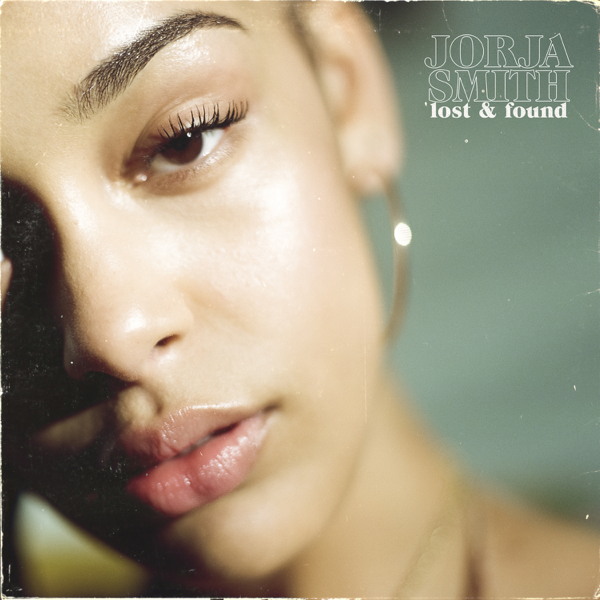
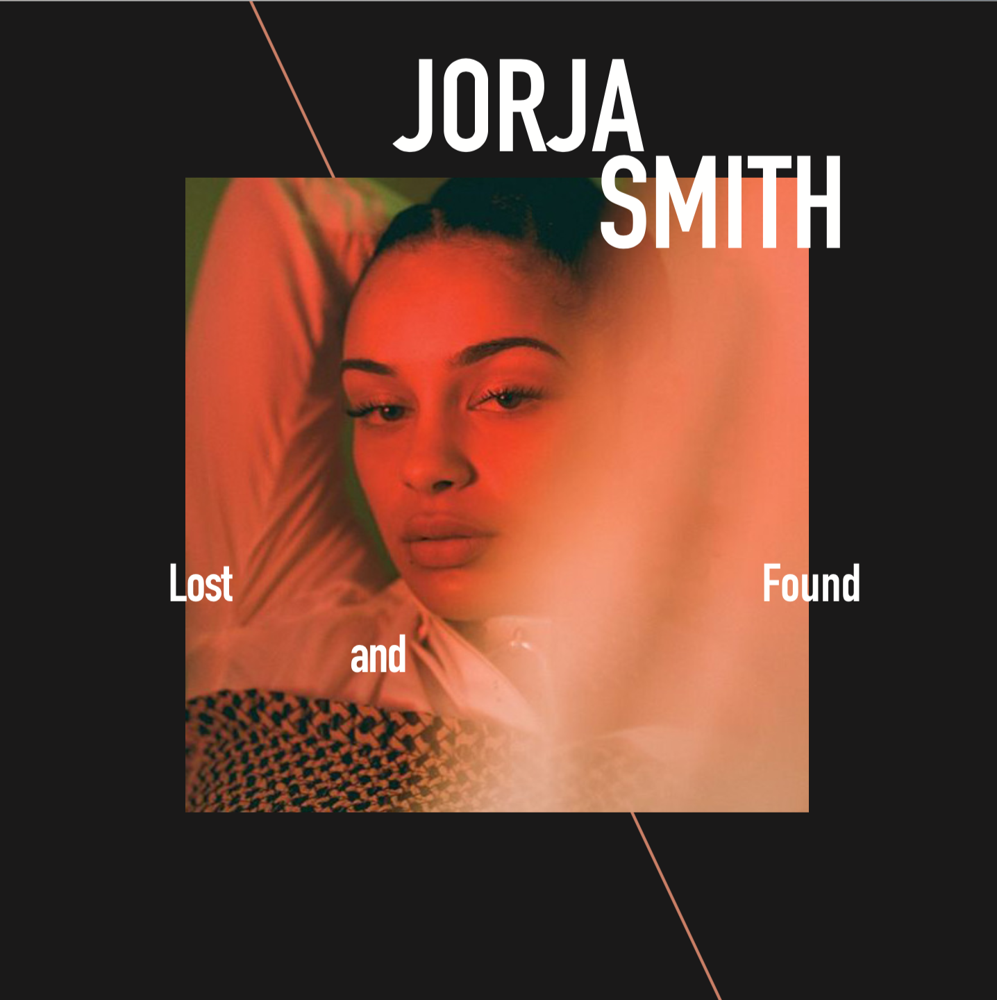
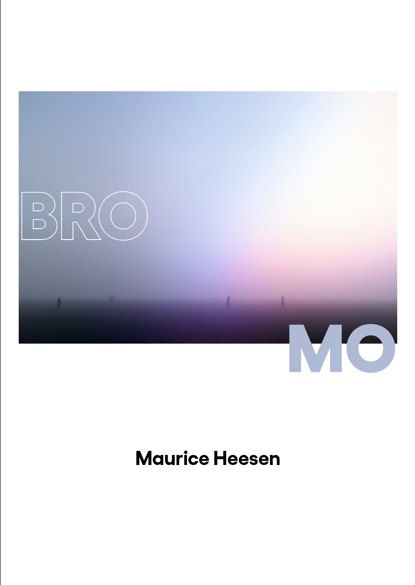
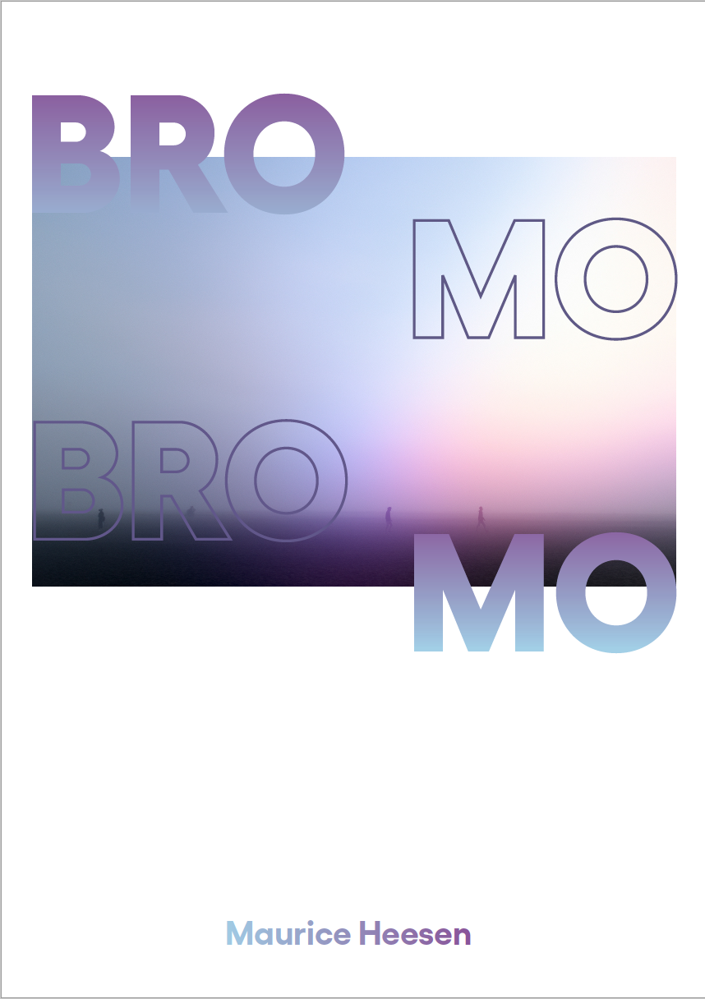
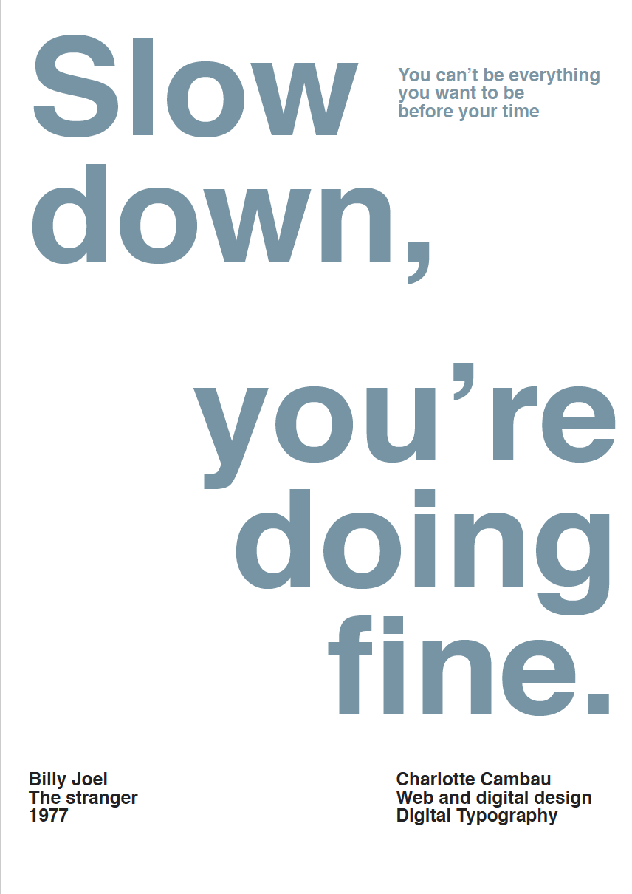
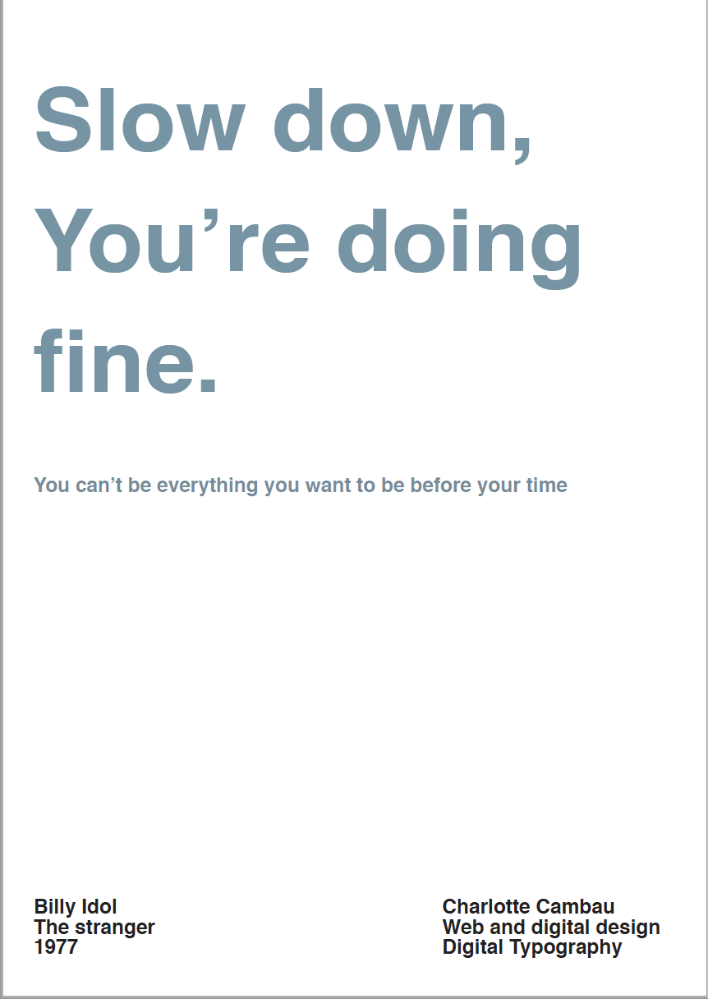

Jorja Smith album cover redesign
before
after


Digital typography posters
Assignment for a digital typography class, where we had to match an image to a typeface and create a poster.


Digital typography posters no.2
Assignment for a digital typography class: choose a song lyric you like and make a poster out of it.


Paris postcard
A little exercise asking us to design a postcard from our home